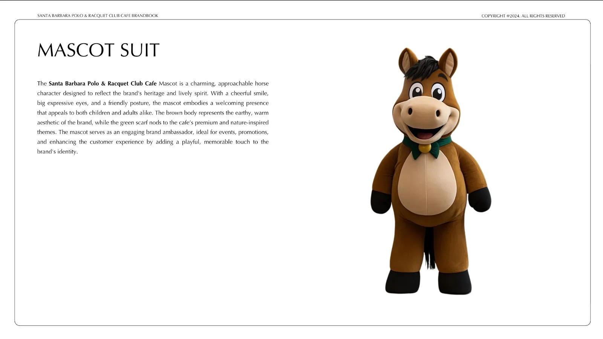
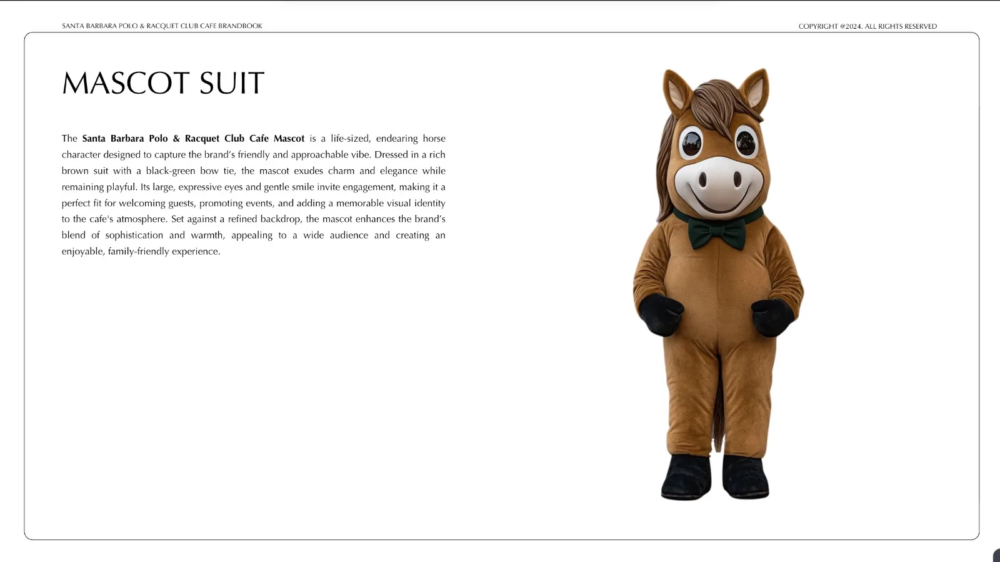

Back to mascot gallery

Riding kit

Sunglasses and coffee
Default suit

Club polo
Bow-tie look

The full line-up
Santa Barbara Polo & Racquet Club
A horse mascot suit for Santa Barbara Polo & Racquet Club, drawn in four looks, from the riding kit to the casual club polo.

